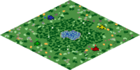

T90 Titans League returns bigger and better than ever! This recurring competition provides a consistent, high-level stage for established pros to sharpen their skills, while giving newcomers the chance to prove themselves and break into the top tier. Across the first four Seasons, 24 players competed in both the Platinum and Gold Leagues, with Silver serving as a qualifier. For Season 5, the format expands: Silver becomes a full league, and Bronze takes its place as the qualifier, opening the door for 24 more players to battle through a full group stage and climb the ladder. With a $100,000 prize pool spread across more than 100 competitors, T90 Titans League delivers one of the most open and rewarding pathways into the Age of Empires pro scene.
| T90 Titans League Bronze League | |
|---|---|
| Round 1 | October 20th - October 26th |
| Round 2 | October 27th - November 2nd |
| Round 3 | November 3rd - November 9th |
| Round 4 | November 10th - November 16th |
T90 Titans League Bronze Season 5 follows the rules of the Unified Tournament Handbook with the following changes:
- All players must be in a dedicated Discord voice chat while playing their set, to allow admins to contact them if needed.
- Additional Bronze-specific rule changes will be published here before the start of the event. All other rules default to the Unified Tournament Handbook.
- Seeding is based on the TTL 5 ladder
All breaches (including those not detailed in this handbook) will be handled at the sole discretion of the Tournament Admins, in accordance with the authority granted by the Unified Tournament Handbook.
1 Bronze League Format
A 120 player bracket will be formed from the 8 relegated players from T90 Titans League Gold Season 4 and joined by the top 112 players from the sign ups. They will then be split to form 8 small brackets as shown below:
T90 Titans League 5 Bronze bracket (1 of 8)
The player relegated from T90 Titans League Gold Season 4 will receive a bye in the first round.
From each bracket:
- The winner will progress to the T90 Titans League 5 Gold League;
- The losers of the final and semi-finals will progress to the T90 Titans League 5 Silver League.
If for any reason one of the relegated players from T90 Titans League Gold Season 4 are not able to play in Season 5 Bronze League, 2 players will be added to play in the first round and there will be no bye for the number 1 seed for that bracket.
1.1 Sign up & Seeding
Everyone can sign up using the signup form. Signups close October 18th at 23:59 GMT. To be eligible for the tournament, players have to fulfill the following requirements:
- Players have at least 100 ranked 1v1 games
- Players have at least 50 ranked 1v1 games during the time period the ladder is active (August 24th 20 GMT - October 18th 23:59 GMT)
- Players have to be in the TTL Discord
- Players have to be available for TTL Bronze, Silver and Gold timelines
With the exception of the 8 players that were relegated from T90 Titans League Gold Season 4, all players will be seeded by the T90 Titans League ranking system, which can be found on the rankings tab of the Spectator Dashboard under ‘TTL5’. For seeding, the rating at the time of the signup deadline (October 18th, 23:59 GMT) is used. The columns are explained below:
- Rating: TTL ladder rating (Current Elo of highest account + adjustment + penalty +25% of atp).
- Adjustment: Elo adjustment for losing against higher elo players on a smurf account. Elo can also be gained/lost in non-smurf matchups.
- Penalty: Elo adjustment for dodging (-16 per dodge) and losing on a smurf account (equal to the amount of Elo lost if they had not been on a smurf)
- ATP@25%: 25% of total ATP, added to rating to reward results in events in the last calendar year
The ranking system can be found on the rankings tab of the Spectator Dashboard under ‘TTL5’. For seeding, the ranking at the time of the signup deadline (October 18th, 23:59 GMT) is used.
By signing up for the Bronze League, players acknowledge that qualification for Silver or Gold in T90 Titans League 5 requires full availability to play at least one series per week during the following stages:
- Silver League Group Stage: 16 January – 19 February
- Silver League Playoffs: 3 – 4 March
- Gold League Group Stage: 23 January – 27 February
- Gold League Playoffs: 28 February – 1 March
Players unable to commit to these dates should not register for TTL Bronze. Failure to complete matches may result in replacement, disqualification, and/or forfeiture of prizes.
2 Schedule
Bronze League rounds take one week, from Monday through Sunday.
| Round 1 | October 20th - October 26th |
| Round 2 | October 27th - November 2nd |
| Round 3 | November 3rd - November 9th |
| Round 4 | November 10th - November 16th |
2.1 Platinum/Gold Replacement Qualifier
If a player from Platinum League in T90 Titans League 5 chooses not to participate, there will be a replacement qualifier between the 4 players that lost the Gold League playoffs in Season 4. These players are: Kingstone (1), Kasva (2), Prisma (3) & Sobek (4).
If there is an unfilled spot for the Gold League, either due to a player already qualified for Gold League in T90 Titans League 5 dropping out or an extra Gold League player moving up to the Platinum League, there will be a replacement qualifier for Gold League between the 4 players that finished 5th in their Gold League group in T90 Titans League 4. These players are: StonePlease (1), slam (2), miguel (3) & LaN (4).
Replacement qualifiers (Bo5): October 20th - October 26th
3 Match Settings
All sets are played as a Best of 5. This is valid for T90 Titans League 5 Bronze and replacement qualifiers.
Best of 5
- Game 1: Remaining map after the draft (Admin Pick)
- Game 2: Loser of previous game picks any remaining home map
- Game 3: Loser of previous game picks any remaining home map
- Game 4: Loser of previous game picks any remaining home map
- Game 5: Loser of previous game picks any remaining home map
The higher seeded player may decide if they wish to be A or B in the draft. They must be the same for both drafts.
Civ Draft: 4 Bans each, 6 Picks each
Players may not repeat any of their civilizations during the set.
4 Maps
The map pack can be acquired by subscribing to the map mod using this link or by searching for “TTL5 Maps Bronze” in the in-game mod workshop. The maps are the same as those used in T90 Titans League Season 4.
The map pack is edited and maintained by T-West.
Acropolis |
Cross |
Dzong |
Evacuation |
Fortified Clearing |
Jungle Swamp  |
Kilimanjaro |
Pacific Islands |
Ravines |
Rocky Forest |
Shoals |
5 Lobby Settings
Both players are equally responsible for making sure the lobby settings are correct.
Wrong settings may result in a game being replayed and/or a prize pool deduction for both players.
5.1 Pre-Lobby Settings
Screenshot of the Pre-Lobby Settings to use
5.2 Lobby Settings

Screenshot of the Lobby Settings to use
6 Contact
For any questions or inquiries regarding the event, please read the handbook and ask in the Discord.
If you cannot find an answer please reach out to one of the admins:
Admin: JBR
- Discord: jbr1989
- Steam: https://steamcommunity.com/id/jbr_aoe/
- Time zone: East Australia GMT + 11
Admin: Rbase96
- Discord: rbase96
- Steam: https://steamcommunity.com/id/RBase96/
- Time zone: West Europe, GMT + 2
Admin: Lord Patito
- Discord: lord_patito
- Steam: https://steamcommunity.com/id/Lord_Patito/
- Time zone: Argentina, GMT - 3
7 Prize Pool
The prize pool for T90 Titans League 5 Bronze is $1,600.
- Round 1 losers: $0
- Round 2 losers: $50
- Round 3 losers: Qualify for T90 Titans League Season 5 Silver League
- Round 4 losers: Qualify for T90 Titans League Season 5 Silver League
- Round 4 winners: Qualify for T90 Titans League Season 5 Gold League
All players that qualify for T90 Titans League 5 Silver or Gold will make at least $150 in the main event.
To be eligible for prize payouts players must complete all of the following:
- All games must be completed within the prescribed schedule.
- All recorded games & drafts must have been shared in the discord channel.
- Players must complete an invoice within one (1) month of the end of the tournament. Details will be shared at the appropriate time.
8 Event Coverage
8.1 All Coverage
- All broadcasters (including players) must register here their intention to stream any games, so that they can be given access to the appropriate Discord channels.
- All broadcasting must include the tournament logo before, after and in-between tournament games. Assets can be found in the #caster-resources channel on Discord, or at the end of this document.
- The tournament logo must be visible at all times while in-game.
- All broadcasters must add a custom chat command mentioning the sponsor, & linking to the
hosts stream & the announcement post or Liquipedia.
- Example text:
!TTL=T90 Titans League is hosted by T90Official (https://twitch.tv/T90Official) & sponsored by World’s Edge. You can read more about it here - https://liquipedia.net/ageofempires/T90_Titans_League/5/Bronze_League
- Example text:
- Content creators are free to upload videos to video sharing platforms at their convenience.
Games will be either available live or released alongside the main stream where they are being
played in advance.
- When uploading gameplay from this event to other video sharing platforms, it must be clear, by using the title or description, who the tournament’s host is and what event it comes from.
- There must always be a direct clickable link to the official YouTube channel of the host (https://www.youtube.com/c/T90Official) in the description.
- T90 Titans League Bronze Rounds 1, 2 and 3 will be cast according to player scheduling. The final round (Round 4) will be covered live or as recs between November 13th and November 16th.
8.2 Players
-
Players will be given a large degree of flexibility over scheduling, and are allowed to stream
their POV.
- For Round 4, players must play in a scheduled time slot if they want to stream their POV
- Players must use a two minute stream delay. In rare instances, players may be requested by
admins to use a longer spectator delay.
- The spectator delay MUST match the stream delay (Standard 2 minutes).
- Players must not have access to any information which could give an unfair advantage at any stage.
- Players streaming their games via Twitch/Facebook/YouTube/Douyu etc need to disable text to speech alerts and ensure that they cannot see their chat during their matches. Reading or interacting with chat between the start of the draft and the end of the last game can lead to a prize money deduction or immediate disqualification.
8.3 Casters
- In the event that there are multiple matches being played at the same time, best efforts will be made to provide casters with recorded games that are spoiler free.
9 Assets
{kind=link}
10 Changelog
- 2025-08-24 - v1
- Initial Handbook version